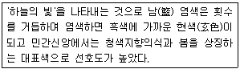

컬러리스트산업기사 (2005-03-06 기출문제)
1과목: 색채심리
1. 색채의 상징과 관련이 없는 것은?
- 교통표지
- 픽토그램
- 안전색채
- 옵아트
(정답률: 알수없음)

2. 기능적 색채의 연결이 올바른 것은?
- 공장의 천정 - 회색
- 학교의 벽면 밝기 - 반사율 70 % 이상
- 산업시설의 기계류 - 25 ∼ 40 %의 반사율
- 산업시설의 기계류 - 회색
(정답률: 알수없음)
3. 다음 중에서 색채의 배색 효과에 있어서 가장 부드럽고 유아적인 느낌을 갖는 색채배색은?
- deep tone의 배색
- dark tone의 배색
- grayish tone의 배색
- pale tone의 배색
(정답률: 알수없음)
4. 적십자의 구호물품은 세계적인 공통의 색채체계를 가지고 있다. 그 중 의류가 들어있는 구호품에 사용되는 색은?
- 빨강
- 파랑
- 노랑
- 녹색
(정답률: 알수없음)
5. 유채색 중 운동량이 활발하고 생명력이 뛰어나 역삼각형이 연상되는 색채는?
- 빨강
- 노랑
- 파랑
- 검정
(정답률: 알수없음)
6. 다음 중 안정적이며, 온도감 없이 중성적인 느낌의 색채는?
- 녹색
- 귤색
- 파랑
- 다홍
(정답률: 알수없음)
7. 색의 3속성 중에서 중량감에 가장 큰 영향을 미치는 것은?
- 색상
- 명도
- 채도
- 톤
(정답률: 알수없음)
8. 같은 주황색의 경우 빨강바탕 위의 주황은 노랑기미를 띄고, 노랑바탕 위의 주황은 빨강기미를 띄는 것은 무슨 대비현상인가?
- 연변대비
- 채도대비
- 면적대비
- 색상대비
(정답률: 알수없음)
9. 색채의 시간성과 속도감을 이용한 색채계획에 있어서 틀린것은?
- 오랜 시간 기다려야 하는 대합실에 적합한 색채는 지루함이 느끼지지 않는 난색계의 색을 적용한다.
- 손님의 회전율이 빨라야 할 패스트푸드 매장에서는 난색계의 색을 적용한다.
- 사무실에 적합한 색채로는 한색계의 색상을 적용한다.
- 고채도의 난색계 색상이 한색계보다 속도감이 빠르게 느껴지므로 스포츠카의 외장색으로 좋다.
(정답률: 알수없음)
10. 색채기호 조사분석에 해당하지 않는 것은?
- 가격에 의한 제품의 구매 특성 조사
- 상품의 이미지에 의한 구매 경향 조사
- 소비자의 색채 감성을 파악하는 것
- 제품디자인과 관련된 효과적인 색채 정보를 얻는 것
(정답률: 알수없음)
11. 색채와 상징 내용을 연결시켜 놓은 것 중 잘못된 것은?
- 보라 : 창조, 우아, 신비, 신앙
- 회색 : 정지, 금지, 불안, 부활
- 노랑 : 팽창, 희망, 광명, 유쾌
- 파랑 : 심원, 냉정, 영원, 성실
(정답률: 알수없음)
12. 색채의 공감각이란 무엇인가?
- 색채와 다른 감각간의 교류 현상
- 색채와 다른 감각간의 차별화 현상
- 색채와 다른 감각간의 통합 현상
- 색채와 다른 감각간의 분화 현상
(정답률: 알수없음)
13. 일반적인 색채 선호 경향으로 틀린 것은?
- 두뇌형 - 녹색
- 근육형 - 빨강색
- 이기적인 형 - 파랑색
- 사교적인 형 - 주황색
(정답률: 알수없음)
14. 색채선호 원리에 대한 설명으로 틀린 것은?
- 색의 선호도는 피부색과 눈동자, 모발색과는 연관성이 없다.
- 색의 선호도는 태양광의 양에 따라 다른 양상을 보인다.
- 색의 선호도는 교양과 소득에 따라 다르며 연령에 따라서도 변화한다.
- 색의 선호도는 성별, 민족, 지역에 따라 다르다.
(정답률: 알수없음)
15. 특정국가나 지역의 문화나 역사를 넘어 국제언어로 활용되는 색채의 대표적인 예들 중 거리가 먼 것은?
- 노랑 - 장애물 또는 위험물에 대한 경고
- 빨강 - 소방기구, 금지 표시
- 녹색 - 구급장비, 상비약, 의약품
- 파랑 - 종교적 시설, 정숙, 도서관
(정답률: 알수없음)
16. 우리나라의 오방색과 고분벽화에 그려진 그림의 연결이 틀린 것은?
- 동쪽 - 청색 - 청룡
- 북쪽 - 흑색 - 현무
- 남쪽 - 황색 - 주작
- 서쪽 - 흰색 - 백호
(정답률: 알수없음)
17. 두색 또는 다색의 배색에서 대비가 지나치게 강할 경우에 대립을 완화시키기 위해 색과 색 사이에 삽입하여 보편적으로 사용하는 색이 아닌 것은?
- 흰색
- 검정
- 회색
- 순색
(정답률: 알수없음)
18. 다음 중 색채의 조화를 위한 효과적인 배색방법을 설명한 것으로 틀린 것은?
- 사용되는 색을 같은 톤으로 통합하면 전체의 이미지도 통합된다.
- 무채색을 기조로 하여 유채색을 조합하면 우아하고 캐쥬얼한 이미지가 된다.
- monotone을 사용하면 단조롭고 심플하므로 질감의 차이로 변화를 주면 좋다.
- 유사색상의 배색은 톤의 대비효과를 강하게 하면 온화한 느낌으로 조화를 이루게 된다.
(정답률: 알수없음)
19. 색의 공감각적 특성 가운데 새콤한 맛을 느낄 수 있으며 자극성이 있고 톡 쏘는 냄새가 느껴지고 높은 소리에 광택 감을 주는 색은 다음 중 어느 것인가?
- 오렌지색
- 올리브색
- 메론색
- 포도주색
(정답률: 알수없음)
20. 피부에 노란기가 있고 창백해 보이는 얼굴 색의 경우, 개성을 부각시킬 수 있는 가장 적절한 머리 염색 색채는?
- 파랑 띤 검정
- 차가운 느낌의 금발
- 담갈색
- 황금색 띤 갈색
(정답률: 알수없음)
2과목: 색채디자인
21. 다음 중에서 디자인의 목적에 해당되지 않는 것은?
- 디자인은 보다 사용하기 쉽고, 편리하며, 아름다운 생활환경을 창조하는 조형행위이다.
- 디자인은 실용적이고 미적인 조형의 형태를 개발하는 것이다.
- 디자인은 아름다움을 추구하기 위하여 즉시적이고 무의식적인 조형의 방법을 개발하고 연구하는 것이다.
- 디자인은 특정 문제에 대한 목적을 마음에 두고, 이의 실천을 위하여 세우는 일련의 행위 개념이다.
(정답률: 알수없음)
22. 매슬로우(A.Maslow)의 기본욕구에 해당하지 않는 것은?
- 안전욕구
- 생리적욕구
- 자아실현욕구
- 소비욕구
(정답률: 알수없음)
23. 다음 중 키치문화의 성격이 아닌 것은?
- 혼재 : 신·구 문화가 동시에 존재
- 일상 : 테마카페, 분장카페 등의 문화
- 모방 : 연예인의 옷, 악세사리 등이 유행
- 향수 : 변화하는 사회에 대한 보상심리
(정답률: 알수없음)
24. 다음 보기에서 색채의 역할과 그 예로 짝지워진 것 중 서로의 관계가 적절하지 않은 것은?
- 제품 정보를 알려줌 - 초콜릿의 포장지에 초콜릿 색을 사용하였다.
- 사회적 정보를 알려줌 - 신부가 흰색의 드레스를 입고 있다.
- 언어적 정보를 알려줌 - 여성용 화장실에 빨간색 표지판을 붙였다.
- 문화적 정보를 알려줌 - 스포츠 경기에 참가한 두 팀의 유니폼 색이 동일하다.
(정답률: 알수없음)
25. 심볼과 기호를 통하여 정보를 전달하는 커뮤니케이션의 역할을 하는 디자인 분야는?
- 시각디자인
- 제품디자인
- 환경디자인
- 패션디자인
(정답률: 알수없음)
26. 다품종 소량생산체제로 변화하면서 세분화된 시장을 선택하여 이에 알맞은 제품을 제공하는 마케팅 기법은?
- 이미지 마케팅
- 표적 마케팅
- 소량 마케팅
- 제품 마케팅
(정답률: 알수없음)
27. 포스트 모던 양식의 특징이 아닌 것은?
- 절충주의(eclecticism)
- 맥락주의(contextualism)
- 은유(metaphor)와 상징(symbolism)
- 간결성(simplicity)
(정답률: 알수없음)
28. 윌리암 모리스에 관한 설명 중 잘못된 것은?
- 영국의 시인이며 사상가로서 기계적인 생산을 부정하며 미술공예운동의 주창자.
- 바우하우스의 설립자이자 근대건축과 디자인 운동의 대표적인 지도자.
- 낭만적이고 유미주의적인 의식의 소유자로서 근대 디자인의 선구자.
- 존 러스킨의 사상을 이어받아 1861년에는 모리스, 마샬, 포크너 상회를 설립하여 직접 공예품을 제작.
(정답률: 알수없음)
29. 디자인의 요소 중 기하학적 정의에서 위치만을 가지고 있는 것은?
- 입체
- 점
- 선
- 면
(정답률: 알수없음)
30. 색채 조사 방법 중 형용사의 반대어 쌍을 이용하여 일정 점수를 지니는 척도를 주어 각 형용사에 해당하는 점수를 부여하는 방식으로 주로 이미지를 측정하는 방법으로 많이 활용되는 조사 방법은?
- SD법
- MD법
- AD법
- TD법
(정답률: 알수없음)
31. 디자인의 심미성에 대해 적절하게 기술한 것은?
- 디자이너의 주관적 판단에 의해 결정되어야 한다.
- 기능적인 디자인에는 심미성이 결여될 수 밖에 없다.
- 소비대중이 공감할 필요는 없다.
- 사회, 문화적으로 평가가 달라질 수 있다.
(정답률: 알수없음)
32. 색채 이미지는 색의 삼속성과 관련이 높다. 특히 명도와 채도의 복합 개념으로 다양한 이미지를 전달하는 것은?
- 색상
- 분위기
- 색조
- 배색
(정답률: 알수없음)
33. 미용디자인에서 메이크업의 표현 요소와 거리가 먼 것은?
- 색
- 형
- 질감
- 대비
(정답률: 알수없음)
34. 좋은 디자인이 되기 위한 조건이 아닌 것은?
- 기능성
- 심미성
- 창조성
- 윤리성
(정답률: 알수없음)
35. 칼라 이미지 스케일에 대한 설명으로 틀린 것은?
- 색채이미지를 어휘로 표현하여 좌표계를 구성한 것이다.
- 유행색 경향 및 선호도 비교분석에 사용된다.
- 색채의 3속성을 체계적으로 이미지화한 것이다.
- 색채가 주는 느낌, 정서를 언어스케일로 나타낸 것이다.
(정답률: 알수없음)
36. 다음 중 '스트리트 퍼니쳐 디자인'이 속하는 디자인 영역은?
- 시각디자인
- 공예디자인
- 환경디자인
- 실내디자인
(정답률: 알수없음)
37. 문화와 언어를 초월해서 직관적으로 이해할 수 있도록 한 그림문자로서의 그래픽 심볼을 뜻하는 용어는?
- 픽토그램(Pictogram)
- 아이소타이프(Isotype)
- 아이텐티티(Identity)
- 심볼마크(Symbol Mark)
(정답률: 알수없음)
38. 19세기 미술공예운동(Art and Craft movement)이 일어나게 된 근본 원인은 무엇인가?
- 미술과 공예작품의 가격이 급격하게 하락되었기 때문
- 기계로 생산된 제품의 질이 현저하게 낮아졌기 때문
- 미술작품과 공예작품을 구별하기 위해
- 미술가와 공예가의 사회적 위상을 제고시키기 위해
(정답률: 알수없음)
39. 타이포그래피(typography)를 가장 잘 설명한 것은?
- 그림 형태로 이루어진 글자의 조형적 표현
- 광고에 나오는 그림의 조형적 표현
- 글자에 의한 모든 커뮤니케이션의 조형적 표현
- 상징에 의한 커뮤니케이션의 조형적 표현
(정답률: 알수없음)
40. 하나 뿐인 지구와 환경에 대한 사랑을 철학으로 출발하여 환경주의에 바탕을 둔 마케팅을 무엇이라 하는가?
- 이미지 마케팅
- 블루 마케팅
- 그린 마케팅
- 포트폴리오 마케팅
(정답률: 알수없음)
3과목: 섹채관리
41. 다음 중 염료에 대한 설명이다. 옳은 것은?
- 가는 분말형태로 매질에 고착된다.
- 페인트, 잉크, 플라스틱 등에 섞어 사용한다.
- 불투명한 색상을 띤다.
- 용매에 녹는다.
(정답률: 알수없음)
42. 육안으로 색채일치를 확인하기 위하여 필요한 장치는?
- 색채관측상자
- 회전 혼색판
- Munsell color book과 크세논등
- monochromator(단색화 장치)
(정답률: 알수없음)
43. CIE에서 결정한 표준 광원의 색온도에 들지 않는 것은?
- 약 2856 K
- 약 4874 K
- 약 6774 K
- 약 8768 K
(정답률: 알수없음)
44. 포토샵 등의 영상 및 색채 처리 관련 프로그램에서 주어진 영상의 크기가 작아 영상의 크기를 키울 때 격자가 생겨 계단현상이 생기는 것을 방지하기 위해 사용하는 기술은?
- 저주파 필터링(low-pass filtering)
- 보간법(interpolation)
- 샤프닝(sharpening)
- 겹침(overlapping)
(정답률: 알수없음)
45. 다음은 우리나라에서 예로부터 주로 사용하던 천연염료 중 하나를 설명한 것이다. 무엇을 설명한 것인가?

- 쪽
- 홍화염료
- 치자염료
- 자초염료
(정답률: 알수없음)
46. 다음 중 한국산업규격(KS)이 정한 안전색의 일반적 사항 중에서 통로의 표시, 방향지시, 정돈이나 청결을 필요로 하는 개소에 사용하는 색깔은?
- 적자색
- 흑색
- 백색
- 청색
(정답률: 알수없음)
47. 색채측정기의 종류를 크게 두가지로 나눈다면 어떤 것이 있는가?
- 필터식 색채계와 망점식 색채계
- 분광식 색채계와 렌즈식 색채계
- 필터식 색채계와 분광식 색채계
- 음이온 색채계와 분사식 색채계
(정답률: 80%)
48. 측색장치로 색채를 측정했을 때 반드시 표기해야 할 사항은?
- 측색의 기준 표준광
- 색채계의 분광분해능
- 색채계의 교정주기
- 측정 작업자 성명
(정답률: 알수없음)
49. 안료에 대한 설명으로 틀린 것은?
- 일반적으로 투명하다.
- 다른 화합물을 이용하여 표면에 부착시킨다.
- 무기물이나 유기 안료도 있다.
- 착색하고자 하는 매질에 용해되지 않는다.
(정답률: 알수없음)
50. 검정과 흰색(두개의 색채레벨)으로 색채를 나타내는 비트 체계는?
- 1비트
- 2비트
- 8비트
- 16비트
(정답률: 알수없음)
51. 육안 검색에 대한 설명으로 맞지 않는 것은?
- 육안 검색의 측정각은 관찰자와 대상물의 각을 45°로 한다.
- 비교하는 색은 인접되지 않도록 유의하고 계단식으로 배열되도록 배치한다.
- 시감 측색의 표기는 한국산업규격(KS)의 먼셀기호로 표기한다.
- 비교하는 색의 면적은 눈의 각도가 2°이상 10° 정도로 한다.
(정답률: 알수없음)
52. 우리나라에서 사용하던 천연염료 중 염료별 염색 색채가 잘못 짝지어진 것은?
- 홍화염료 - 주홍색
- 치자염료 - 검은색
- 자초염료 - 자색
- 쪽 - 청색
(정답률: 알수없음)
53. 다음 중 먼셀 관찰시야와 CIE표준 관찰시야는?
- 2도, 10도
- 5도, 10도
- 5도, 15도
- 5도, 20도
(정답률: 알수없음)
54. 색관측 또는 색관측함에 대한 설명 중 적절치 못한 것은?
- 원추세포가 작동할 수 있도록 조도가 충분해야 하며, 통상 100 lux 정도이어야 한다.
- 관측함의 내벽은 중회색(L* = 50)으로 칠하여 색채 순응현상이 없도록 한다.
- 관측함의 전구는 사용시간을 측정하여 제작사에서 추천하는 전구의 수명이 끝나면 교체해야 한다.
- 색채 관측 시 규정된 표준광원 아래에서의 조명 관측 조건을 고려하여야 한다.
(정답률: 알수없음)
55. CCM의 배합비 계산은 빛의 흡수와 산란 계수인 K/S값을 이용한다. 다음 중 K/S 값에 대한 계산식에서 해당되지 않는 용어는?
- K = 흡수계수
- S = 산란계수
- R = 분광반사율
- P = 빛의 파장 범위
(정답률: 알수없음)
56. 광원의 측정량에 대한 설명으로 맞는 것은?
- 광도 - 단위는 룩스(lux)이며, 단위 면적에 1루멘의 광속이 입사된 경우 1룩스(lux)라 한다.
- 전광속 - 단위는 룩스(lux)이며, 단위 입체각으로 1루멘의 에너지를 방사하는 광원의 광도를 1룩스 (lux)라 한다.
- 조도 - 단위는 루멘(lm)이며, 인간의 눈으로 단위 시간(1초) 동안 측정된 에너지를 1루멘(lm)이라 한다
- 휘도 - 일반적으로 면광원의 광도를 말하며, 단위 면적당 1칸델라(cd)의 광도가 측정된 경우를 1cd/m2라 한다.
(정답률: 알수없음)
57. 스캐너를 이용하여 입력받은 컬러영상을 저장할 때 사이즈를 가장 적게 해서 저장할 수 있는 이미지 파일 저장 형식은?
- BMP
- JPG
- GIF
- PSD
(정답률: 알수없음)
58. 인쇄에 있어서 가장 일반적으로 사용되는 잉크를 나열한 것은?
- Red, Green, Blue, White
- Yellow, Magenta, Cyan, Black
- Yellow, Red, Black, White
- Red, Green, Blue, Black
(정답률: 알수없음)
59. 비교적 구성요소가 간단하여 저렴한 장비들로서 현장에서 색채관리 하기 쉬운 이동형 색채계로 많이 활용되는 색채 측정기 또는 색채계는?
- 분광식 색채계
- 필터식 색채계
- 여과식 색채계
- 회전분할 색채계
(정답률: 알수없음)
60. 비트맵(bitmap)이란?
- 디지털 정보의 8 비트들에 해당하는 측정단위
- 픽셀들이 그리드 속으로 찍어지는 디지털화 된 이미지
- 일초 당 비트들의 수
- 연속적으로 변하는 데이터
(정답률: 알수없음)
4과목: 색채지각의이해
61. 다음 중 영·헬름홀쯔(Hermann von Helmholtz)의 3원색설이 아닌 것은?
- 3원색설의 세 개의 기본색은 빛의 혼합인 3원색과 동일하다.
- 색의 잔상효과와 대비이론의 근거가 되는 학설이다.
- 노랑은 빨강과 초록의 수용기가 동등하게 자극되었을 때 지각된다는 학설이다.
- 세 종류의 시신경세포가 세 개의 기본색에 대응함으로 써 색채지각이 일어난다는 학설이다.
(정답률: 알수없음)
62. 주황색의 채도를 높이는 색채대비를 하려면 배경색은 어떤 색을 선택하는 것이 좋은가?
- 빨간색
- 파란색
- 노란색
- 회색
(정답률: 알수없음)
63. 대비효과가 순간적으로 일어나며, 시점을 한 곳에 집중시키려는 색채지각과정에서 일어나는 현상은?
- 동시대비
- 계시대비
- 병치대비
- 동화대비
(정답률: 알수없음)
64. 중간혼합에 대한 설명으로 잘못된 것은?
- 점묘파 화가 쇠라의 작품은 병치혼합의 방법이 활용된 것이다.
- 병치혼합은 일종의 가법혼색이다.
- 회전혼합은 직물이나 칼라인쇄에 활용되고 있다.
- 회전혼합은 색을 칠한 팽이에서 찾아볼 수 있다.
(정답률: 알수없음)
65. 어두운 곳에 있다가 밝은 곳으로 나오면 처음에는 눈이 부시지만 곧 잘 볼 수 있게 된다. 이와 같은 현상은 우리 눈의 어떤 기능과 관련 있는가?
- 색순응
- 동화현상
- 박명시
- 명순응
(정답률: 알수없음)
66. 색의 중량감에 가장 큰 영향을 미치는 색의 속성은?
- 색상
- 명도
- 채도
- 온도감
(정답률: 알수없음)
67. 다음 내용 중 틀린 것은?
- 검정색이 섞일수록 채도가 낮아진다.
- 흰색이 섞일수록 채도가 높아진다.
- 검정색이 섞일수록 명도가 낮아진다.
- 흰색이 섞일수록 명도가 높아진다.
(정답률: 알수없음)
68. 패션쇼의 마지막 부분에서 전체 모델들을 향해 백색 조명이 비춰지게 하려 한다. 각각 다른 방향에서 조명을 비춘다면 어떤 조명들의 배합이 되어야 하겠는가?
- blue, red, magenta
- blue, green, yellow
- blue, green, red
- magenta, yellow, cyan
(정답률: 알수없음)
69. 색을 직접 섞지 않고 색점을 섞어 배열함으로써 전체 색조를 변화 시키는 효과를 무엇이라고 하는가?
- 비렌 효과
- 헬름홀쯔 효과
- 프르킨예 효과
- 베졸드 효과
(정답률: 알수없음)
70. 색채의 운동성에 대한 설명으로 틀린 것은?
- 색채의 진출성과 후퇴성에 대한 심리적 반응의 결과이다.
- 공간이 색채로 인해 넓어 보이거나 좁아 보일 수는 없다.
- 진출색과 후퇴색은 색채의 팽창, 수축성과 관계가 있다.
- 따뜻한 색이 차가운색 보다 더 진출하는 느낌을 준다.
(정답률: 알수없음)
71. 적절한 배합으로 다양한 색들을 만들어낼 수 있으나, 역으로 어떠한 혼합으로도 만들어낼 수 없는 각기 독립적인 색을 가리키는 용어는?
- 순색
- 원색
- 채색
- 혼색
(정답률: 알수없음)
72. 색상 대비에 대한 설명 중 올바른 것은?
- 적색을 본 후 황색을 보게 되면 황색은 연두색에 가까워 보인다.
- 스테인드 글라스와 우리나라의 전통적인 자수나 의복 등에서 볼 수 있다.
- 빨강과 파랑의 대비는 빨강을 더욱 따뜻하게, 파랑을 더욱 차게 느끼게 한다.
- 줄무늬와 같이 주위 색의 영향으로 인접색에 가까워지는 현상이다.
(정답률: 알수없음)
73. 조선시대 수묵화에 잘 반영되어 있는 색채대비는?
- 동시대비
- 명도대비
- 채도대비
- 보색대비
(정답률: 알수없음)
74. 다음에서 파장이 가장 긴 색은?
- 파랑
- 노랑
- 빨강
- 보라
(정답률: 알수없음)
75. 다음 중 바르게 설명한 것은?
- 색은 빛에 의해 인간의 눈에 자극되었을 때 생기는 시감각의 일종이다.
- 색은 방사되는 수많은 전자파 중 눈으로 지각할 수 없는 전자파를 말한다.
- 280nmm∼380nm의 전자파는 가시광선으로 눈으로 볼 수 있는 파장에 속한다.
- 의료에 사용하는 자외선, X선, 감마선 등은 우리 눈으로 볼 수 있는 광선이다.
(정답률: 알수없음)
76. 잔상에 관한 내용으로 맞는 것은?
- 잔상의 출현은 자극의 강도와 지속시간에 반비례 한다.
- 자극을 제거한 잠시 후에 시각의 상(동질 또는 이질)이 나타나는 현상을 가리킨다.
- 잔상이 원래의 감각과 같은 밝기나 색상을 가질 때 음성 잔상이라고 한다.
- 양성 잔상은 원래의 색과 보색관계에 있는 색을 경험하는 것이다.
(정답률: 알수없음)
77. 다음 중 꽃향기 냄새를 가장 잘 연상할 수 있는 색은 어느것인가?
- 회색, 검은색
- 빨간색, 초록색
- 파란색, 갈색
- 분홍색, 연보라색
(정답률: 알수없음)
78. 물체의 표면색을 지각하는 것과 가장 관계 깊은 빛의 성질은?
- 반사
- 굴절
- 산란
- 투과
(정답률: 알수없음)
79. 감법혼색이나 가법혼색이나 관계없이, 삼원색의 서로 인접한 두 색을 혼합하여 만들어지는 새로운 색을 무엇이라 하는가?
- 일차색
- 보색
- 인접색
- 중간색
(정답률: 알수없음)
80. 푸르킨예 현상을 바르게 설명하는 것은?
- 직물을 색조 디자인할 때 직조시 하나의 색만을 변화시키거나 더함으로써 전체 색조를 조절할 수 있는 것.
- 하얀 바탕종이에 빨강색 원을 놓고 얼마간 보다가 하얀 바탕종이를 빨강종이로 바꾸어 놓았을 때 빨강색이 검정색으로 보이는 현상.
- 색상환의 기본색인 빨강, 노랑, 녹색, 파랑 등의 색이 조합되었을 때 그 대비가 뚜렷이 나타나는 것.
- 암순응 되기 전에는 빨강색 꽃이 잘 보이다가 암순응이 되면 파랑색 꽃이 더 잘 보이게 되는 것으로 광자극에 따라 활동하는 시각기제가 바뀌는 것.
(정답률: 알수없음)
5과목: 색채체계의이해
81. 다음 중 먼셀 표색계의 설명이 틀린 것은?
- 먼셀의 색체체계는 색상, 명도, 채도의 3속성을 근거로 작성되었다.
- 색상은 빨강, 노랑, 녹색, 파랑, 보라의 5 주요 색상과 중간색상을 더하여 10 색상으로 색상환을 만들었다.
- 채도의 숫자는 색상이나 명도에 따라 다르게 되며, 그 최고가 빨강순색(명도=4)인 14단계이다.
- 빨강, 초록, 노랑, 파랑의 4색상과 흰색과 검정색의 감량에 따라 표시한다.
(정답률: 알수없음)
82. 오스트발트 색체계의 표기내용(ca) 중 백색량 기호중 c는 56 %, 흑색량 기호중 a는 11 % 일때 순색량(C)의 혼합비율이 맞는 것은?
- 45 %
- 33 %
- 67 %
- 15 %
(정답률: 알수없음)
83. NCS 색체계의 설명으로 올바른 것은?
- 오스트발트 시스템에서 영향을 받아 24개의 기본색상과 채도 어두움의 정도로 표기한다.
- Natural Color System의 약자로 실제로 자연에서 나타나는 자연색을 중심으로 한 색체계이다.
- 스웨덴 색채연구소에서 발표한 색체계로 심리보색의 개념을 바탕으로 한 색체계이다.
- 색체계의 형태는 원기둥이며 공간상의 좌표를 이용하여 색의 표시와 측정을 한다.
(정답률: 알수없음)
84. 다음 중 2.5Y 8.5/1.5의 먼셀 기호를 갖는 색상의 관용색명은 어느 것인가?
- 브라운
- 도라지꽃 색
- 상아 색
- 겨자 색
(정답률: 알수없음)
85. 한국 공업 규격(KSA 0062)에서 채택하였고 1965년 문교부에서 색채 교육용으로 채택한 표색계는?
- 먼셀 표색계
- 오스트 발트 표색계
- NCS 표색계
- CIE 표색계
(정답률: 알수없음)
86. 오스트발트 색체계의 설명으로 틀린 것은?
- 헤링의 4원색설을 기본으로 채택하였다.
- 수직축은 채도를 나타낸다.
- ga,le,pi는 등순색계열의 색이다.
- ea,ga,ia는 등흑색계열의 색이다.
(정답률: 알수없음)
87. 물체의 표면에서 선택적으로 반사되는 색파장을 나타내는 색의 속성은?
- 색상
- 반사율
- 휘도
- 채도
(정답률: 알수없음)
88. 문·스펜서의 색채 조화론 설명이 아닌 것은?
- 균형 있게 선택된 무채색의 배색은 유채색에 못지 않게 아름다움을 나타낸다.
- 동일 색상의 조화가 좋다.
- 색상과 채도를 일정하게 하고 명도만 변화시키는 경우 많은 색상 사용시보다 미도가 높다.
- 관찰자에게 잘 알려져 있는 배색이 잘 조화된다 라는 숙지의 원리
(정답률: 알수없음)
89. 먼셀색입체의 단면 설명으로 틀린 것은?
- 색입체의 수직단면은 종단면이라고도 하며, 같은 색상이 나타나므로 등색상면이라고도 한다.
- 수직단면은 유사 색상의 명도, 채도변화를 한 눈에 볼 수 있으며, 가장 안쪽의 색이 순색이다.
- 색입체를 수평으로 자른 횡단면에는 같은 명도의 색이 나타나므로 등명도면이라고도 한다.
- 수평단면은 같은 명도에서 채도의 차이와 색상의 차이를 한 눈에 알 수 있다.
(정답률: 알수없음)
90. 다음 중 오스트발트 표색계의 등순 계열에 관한 설명은?
- 오스트발트의 등색상 삼각형에서 백색량이 모두 같은 색의 계열
- 오스트발트의 등색상 삼각형에서 흑색량이 모두 같은 색의 계열
- 오스트발트의 등색상 삼각형에서 순색이 모두 같게 보이는 색의 계열
- 오스트발트의 등색상 삼각형으로 무채색 축을 중심으로 백색량과 흑색량이 같은 28개의 등가색상환 계열
(정답률: 알수없음)
91. CIE L*a*b* 대한 설명으로 맞는 것은?
- 지각적으로 균등한 간격을 가진 색공간 표색방법이다.
- 밝기를 나타내는 L*축의 중심에 가까울수록 채도가 높아진다.
- a*값이 + 이면 노랑, - 이면 파란빛이 강해진다.
- 기후, 환경 등에 영향을 받아 항상 같은 색을 유지하기 힘든 단점이 있다.
(정답률: 알수없음)
92. 다음 중 현색계의 종류에 해당되지 않는 것은?
- 먼셀
- NCS
- DIN
- L*a*b*
(정답률: 알수없음)
93. 다음 중 먼셀 색체계(Munsell System)의 기본 색상으로 올바르게 표기된 것은?
- R, Y, G, O, P
- R, Y, W, B, P
- R, Y, G, B, P
- R, Y, M, B, P
(정답률: 알수없음)
94. 1931년 국제조명위원회(CIE)에서 제안한 CIE 표준표색계의 설명으로 적당한 것은?
- 헤링(Hering)의 반대색설을 바탕으로 한다.
- 가법혼색의 원리를 적용하고 있다.
- 지각색을 바탕으로한 현색계의 시스템이다.
- 빨강, 노랑, 파랑의 3색을 기본 자극으로 한다.
(정답률: 알수없음)
95. 다음 중 관용색명과 이에 대응하는 계통색 이름이 바르게 짝지어진 것은?
- 벚꽃색 - 연한 보라 띤 빨강
- 청자색 - 칙칙한 파랑 띤 녹색
- 살색 - 밝은 회색 띤 주황
- 레몬색 - 해 맑은 녹색 띤 노랑
(정답률: 알수없음)
96. 비렌의 색채조화원리가 아닌 것은?
- Color - Tint - White의 조화
- Tint - Tone - Shade - Gray의 조화
- White - Tone - Color의 조화
- White - Color - Black의 조화
(정답률: 알수없음)
97. 다음 중 관용색명이 아닌 것은?
- Prussian Blue
- Peacock Blue
- Grayish Pink
- Beige
(정답률: 37%)
98. 저드의 색채조화론의 설명으로 옳은 것은?
- 독자성의 원리
- 자연색의 원리
- 명료성의 원리
- 동시대비의 원리
(정답률: 알수없음)
99. 미국의 건축학자 문(Moon)과 스펜서(Spencer)의 조화이론 중 부조화의 종류와 설명이 아닌 것은?
- 제 1부조화 : 아주 가까운 배색
- 제 2부조화 : 유사배색처럼 공통속성도 없으며 대비배색처럼 눈에 띄게 차이가 있는 배색이 아니다.
- 제 3부조화 : 오메가 공간에 나타낸 점이 간단한 기하학적 관계에 있도록 선택된 배색
- 눈부심
(정답률: 알수없음)
100. DIN 색체계는 어느 나라에서 도입한 것인가?
- 영국
- 독일
- 프랑스
- 미국
(정답률: 알수없음)